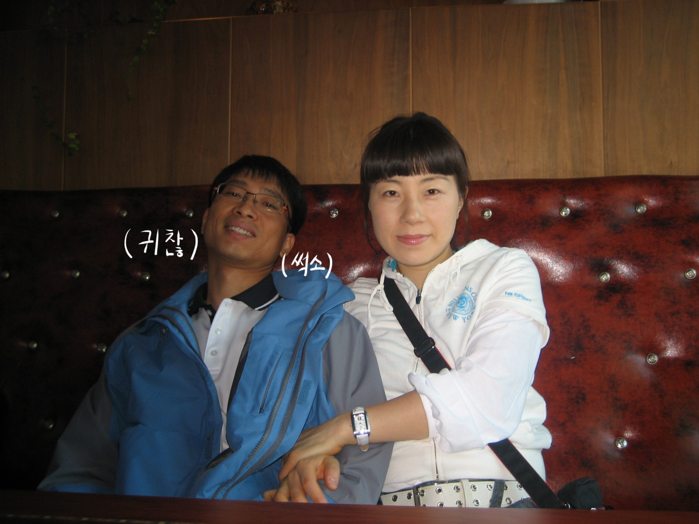
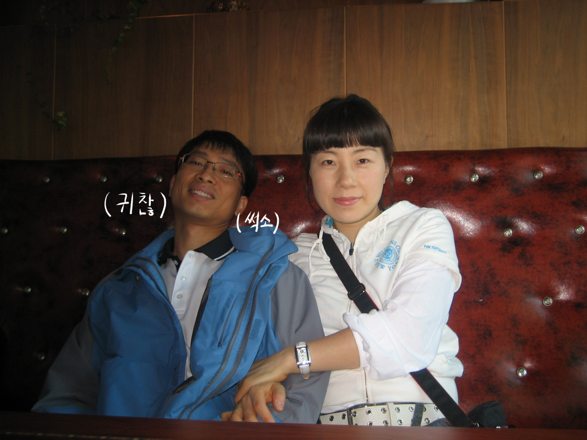

5. 재관의 공무원 시절
 



2006년 3월에 첫 발령이 난 재관은 가족을 데리고 전라남도 순천으로 이사를 간다.
재관은 공무원이 되자 평소 잘 마시지 못하던 술을 잔뜩 먹고 취한 채로 퇴근하는 날이 많아졌고, 자녀들에게 '사람의 뱃가죽이 점박이일 수도 있구나'라는 깨달음을 주었다.
하지만 재관은 퇴근 후 초등학생 딸과 유치원생 아들을 몸으로 잘 놀아주었고 주말에는 근처 천변에 함께 산책하러 가거나 팔마체육관, 하수종말처리장 등에서 인라인을 탄 자녀들과 놀아주는 등(민석이 당시 나이와 피지컬로 우세했던 민주의 인라인 속도를 따라잡지 못하고 시합에서 졌다고 꼬라지를 부리자 재관이 본인이랑 함께 시합을 하는 게 어떻냐고 하여 천천히 달려주며 민석의 기를 살려준 적이 있다)
잦은 음주에도 가정에 소홀하지 않았다. 또한 금전적으로도 안정적인 직업이었기 때문에 은진에게 준 안정감이 꽤 컸을 것이라고 생각한다. 은진이 재관의 급여 명세서를 모았던 기억이 있다. 대체 재관이 얼마정도의 돈을 버는지가 순수하게 궁금했던 어린 시절의 필자는 그 명세서의 숫자를 보고 싶어 은진의 옆을 맴돌았는데 은진은 '크면 알려주겠다'는 회피형 답변으로 대응했었다.


3년 반의 순천 근무 후 전라남도 목포로 발령이 난 재관은 또 다시 가족과 함께 이사를 가게 된다. 어린 시절을 살아왔으며 부모님과 형제들이 여전히 살고 있는 도시였기에 재관은 보다 편안함을 느꼈다.
가족과 함께 할 새로운 보금자리를 구했는데, 이 아파트의 위치가 재관의 교육청과 걸어서 10분 거리로 매우 가까웠기에 재관은 출근 시간이 다 되어서야 부랴부랴 차를 몰고 출근을 하였다.
이후 재관은 신안교육지원청, 해남교육지원청, 전라남도교육청 등으로 발령나며 공무원직을 이어나갔다. 이 시기엔 잦은 음주는 기본이요
한때는 골프에 빠져 자의 반 타의 반으로 매주 골프를 치러 다녔는데, 주말에는 집에서 가족과 시간을 보내는 게 맞다는 은진과 대립이 또다시 잦아지던 시기이기도 했다. 자녀들 역시도 이 시기에 사춘기를 겪으며 조금은 다른 모습으로 변하였기 때문에 혼자 감당하기 버거웠던 은진과 근무의 연장 격으로 치던 골프가 즐겁지 않았던 재관은 각자 나름의 이유가 있었던 것이다.
골프 탓인지 재관은 어깨에 무리가 왔고, '오십견'이라는 진단명 하에 팔을 어깨 높이 위로 들기 힘들 정도로 고통스러워했는데, 여러 의원을 다녀본 끝에 알맞는 치료법을 찾아 다행히 완쾌하였다.
그러다 재관은 일전에 실패한 적이 있는 주식에 발을 들이게 되고, 이것이 재관의 삶을 바꿨대도 과언이 아니다.